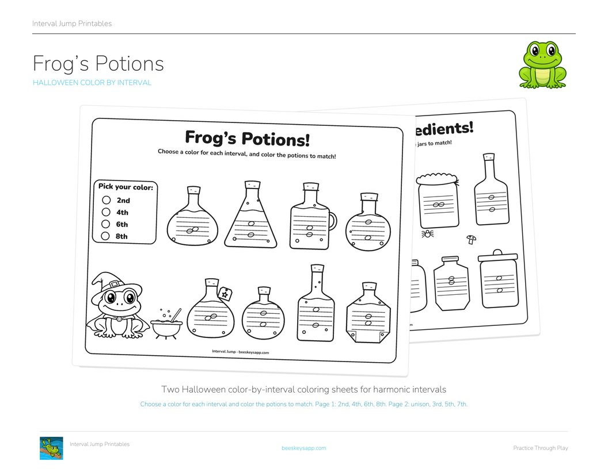
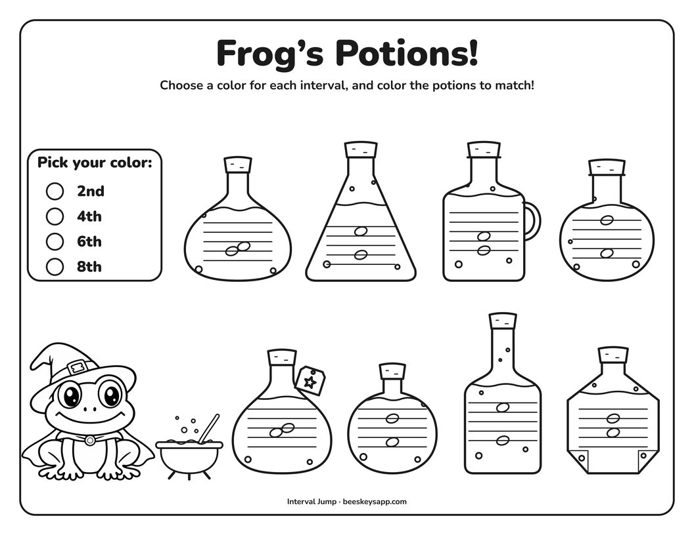
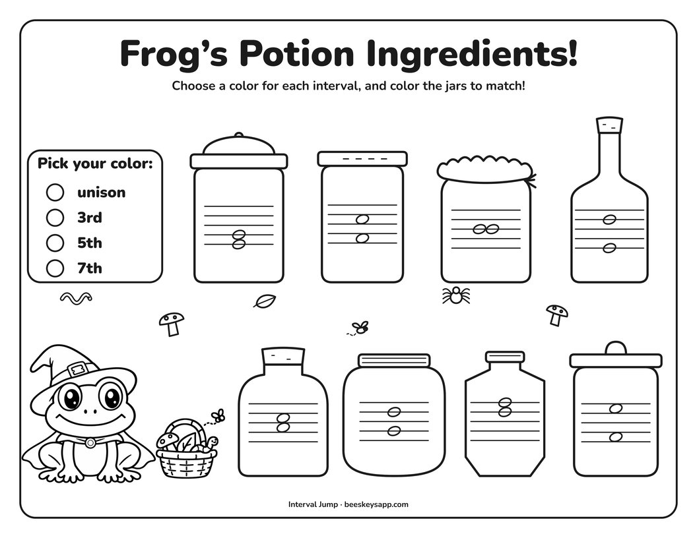

Free printable
Frog's Potions
Halloween Color-by-Interval Coloring Sheets
By Kristianna Callahan · Published October 19, 2026

Click to download the free PDFA Halloween color-by-interval worksheet for harmonic intervals! Choose your own color for each interval, then color the potions and jars to match.
Two pages are included. Frog's Potions has the even intervals: 2nd, 4th, 6th, and 8th. Frog's Potion Ingredients has the odd intervals: unison, 3rd, 5th, and 7th. Each interval appears twice, once with the bottom note on a line and once in a space, so students have to read both notes every time.
Use one page or both. A fun little way to practice intervals on the staff before Halloween!
Download the free printable
-

Frog's Potions 2nd, 4th, 6th, 8th -

Frog's Potion Ingredients unison, 3rd, 5th, 7th
From the page to the river 🐸
These are the same intervals students practice in Interval Jump! On the worksheet the two notes are stacked; in the app, Frog jumps the same distance from one log to the next while students quickly identify each interval on the staff.
The worksheet gives students a little more time to look and think, then the game lets them practice recognizing the same intervals a little faster.
Interval Jump is free to download, and the unison, 2nd, and 3rd are included in the free version. Interval Jump Pro adds the 4th through the 9th.

Interval Jump
Read music fast
A frog crosses the river by leaping between notes on the staff. Repeat, step, and skip are free to play forever; Pro adds leaps, the 4th through 9th intervals, and custom practice sessions.
Want more free music teaching resources?
I'm making more printables, games, and teaching resources. Send me a note and I'll pass new freebies your way.
Free · unsubscribe any time Send me new freebies
Opens your mail app. Your address is only ever used to send you the free resources.